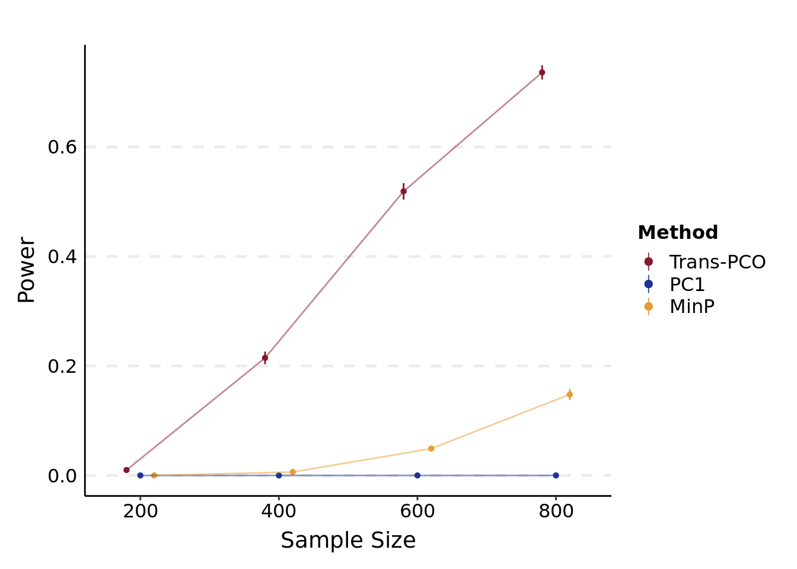
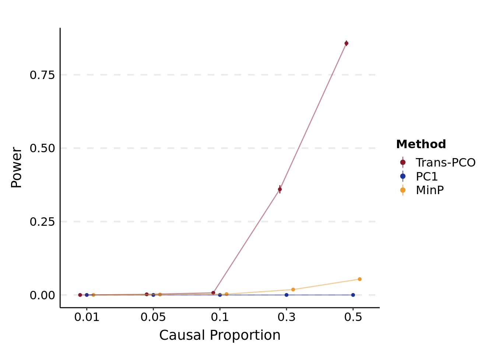
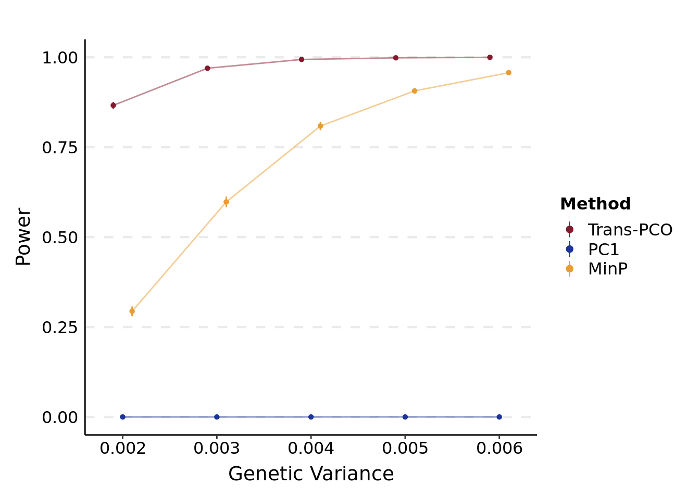

To simulate alternative z-scores and calculate p-values under various scenarios using three association tests: trans-pco, minP, PC1.
Rscript --no-restore --no-save simulation/2_1_sim_alt.R \
N \
0.1 \
simulation/script_lambda0.1/ \
/project2/xuanyao/llw/simulation_lambda0.1/new_Sigma/Sigma-new_DGN_module29_K101.rds \
simulation/result/simulation.alt.N.lambda0.1.varb1e-3.K101.rds \
0.001 \
0.3 \
500 \
10000 \
1000Rscript --no-restore --no-save simulation/2_1_sim_alt.R \
caus \
0.1 \
simulation/script_lambda0.1/ \
/project2/xuanyao/llw/simulation_lambda0.1/new_Sigma/Sigma-new_DGN_module29_K101.rds \
simulation/result/simulation.alt.caus.lambda0.1.varb1e-3.K101.rds \
0.001 \
0.3 \
500 \
10000 \
1000Rscript --no-restore --no-save simulation/2_1_sim_alt.R \
var \
0.1 \
simulation/script_lambda0.1/ \
/project2/xuanyao/llw/simulation_lambda0.1/new_Sigma/Sigma-new_DGN_module29_K101.rds \
simulation/result/simulation.alt.var.lambda0.1.varb1e-3.K101.rds \
0.001 \
0.3 \
500 \
10000 \
1000Calculate power using empirical FDR correction for three tests, under various sample sizes for example.
Rscript --no-restore --no-save simulation/3_cal_power.R \
simulation/result/simulation.alt.N.lambda0.1.varb1e-3.K101.rds \
simulation/result/simulation.null.lambda0.1.K101.rds \
simulation/result/power.N.lambda0.1.varb1e-3.K101.rds \
0.1 \
TrueCompare the power of three association tests: trans-pco, minP, PC1, under various scenarios.
plt_power <- function(file_power, xlab_name){
res.alt = map_dfr(
readRDS(file_power),
~as_tibble(.x, rownames = "model") %>%
pivot_longer(!model, names_to = NULL, values_to = "power") %>%
mutate("model" = str_extract(model, "\\d+.*\\d+$")),
.id = "method"
)
res.alt$method = factor(res.alt$method, c("PCO", "PC1", "minp"), c("Trans-PCO", "PC1", "MinP"))
# point range & line plot ----
base_plt = ggplot(data = res.alt, aes(x = model, y = power, color = method, group = method)) +
stat_summary(
geom = "pointrange",
fun.data = "mean_cl_normal",
fun.args = list(conf.int = .95),
position = position_dodge(width = 0.3),
fatten = 1, size = 0.5
) +
stat_summary(
geom = "line",
fun = "mean",
position = position_dodge(width = 0.3),
alpha = 0.5, show.legend = FALSE
) +
labs(x = xlab_name, y = "Power", color = "Method")
base_plt +
scale_colour_manual(
breaks = c("Trans-PCO", "PC1", "MinP"),
values = c("Trans-PCO" = "#85192d", "PC1" = "#1d349a", "MinP" = "#e89c31"),
guide = guide_legend(override.aes = list(size = 0.3))
) +
theme_classic() +
theme(
panel.grid.major.y = element_line(linetype = "dashed", size = 0.8),
legend.position = "right",
legend.text = element_text(size = 12),
legend.title = element_text(size = 12, face = "bold"),
#legend.background = element_rect(color = "black", linetype = "dashed"),
legend.key.size= unit(0.5, "cm"),
axis.line = element_line(colour="black"),
#axis.line.y = element_blank(),
axis.ticks.y = element_blank(),
axis.text=element_text(colour = "black", size=12),
axis.title.y = element_text(angle=90,vjust =2, size=14),
axis.title.x = element_text(vjust = -0.2, size=14),
plot.margin=unit(c(10,5,5,5),"mm")
) +
coord_cartesian(xlim = c(1.2, n_distinct(res.alt$model) - 0.2))
}plt_power(
'/project2/xuanyao/llw/simulation_lambda0.1/new_Sigma/power.N.lambda0.1.varb1e-3.K101.rds',
"Sample Size"
)## Warning: The `x` argument of `as_tibble.matrix()` must have unique column names if `.name_repair` is omitted as of tibble 2.0.0.
## Using compatibility `.name_repair`.
## This warning is displayed once every 8 hours.
## Call `lifecycle::last_lifecycle_warnings()` to see where this warning was generated.
plt_power(
'/project2/xuanyao/llw/simulation_lambda0.1/new_Sigma/power.caus.lambda0.1.varb1e-3.K101.rds',
"Causal Proportion"
)
plt_power(
'/project2/xuanyao/llw/simulation_lambda0.1/new_Sigma/power.var.lambda0.1.varb1e-3.K101.rds',
"Genetic Variance"
)
sessionInfo()## R version 4.1.2 (2021-11-01)
## Platform: x86_64-conda-linux-gnu (64-bit)
## Running under: Ubuntu 20.04.3 LTS
##
## Matrix products: default
## BLAS/LAPACK: /scratch/midway2/liliw1/conda_env/rstudio-server/lib/libopenblasp-r0.3.18.so
##
## locale:
## [1] LC_CTYPE=en_US.UTF-8 LC_NUMERIC=C
## [3] LC_TIME=en_US.UTF-8 LC_COLLATE=en_US.UTF-8
## [5] LC_MONETARY=en_US.UTF-8 LC_MESSAGES=en_US.UTF-8
## [7] LC_PAPER=en_US.UTF-8 LC_NAME=C
## [9] LC_ADDRESS=C LC_TELEPHONE=C
## [11] LC_MEASUREMENT=en_US.UTF-8 LC_IDENTIFICATION=C
##
## attached base packages:
## [1] stats graphics grDevices utils datasets methods base
##
## other attached packages:
## [1] forcats_0.5.1 stringr_1.4.0 dplyr_1.0.7 purrr_0.3.4
## [5] readr_2.1.2 tidyr_1.2.0 tibble_3.1.7 ggplot2_3.3.6
## [9] tidyverse_1.3.1
##
## loaded via a namespace (and not attached):
## [1] httr_1.4.2 sass_0.4.0 jsonlite_1.7.3
## [4] splines_4.1.2 modelr_0.1.8 bslib_0.3.1
## [7] Formula_1.2-4 assertthat_0.2.1 highr_0.9
## [10] latticeExtra_0.6-29 cellranger_1.1.0 yaml_2.2.2
## [13] pillar_1.7.0 backports_1.4.1 lattice_0.20-45
## [16] glue_1.6.2 digest_0.6.29 RColorBrewer_1.1-3
## [19] checkmate_2.0.0 rvest_1.0.2 colorspace_2.0-3
## [22] htmltools_0.5.2 Matrix_1.4-0 pkgconfig_2.0.3
## [25] broom_0.7.12 haven_2.4.3 scales_1.2.0
## [28] jpeg_0.1-9 tzdb_0.2.0 htmlTable_2.4.0
## [31] farver_2.1.1 generics_0.1.2 ellipsis_0.3.2
## [34] withr_2.5.0 nnet_7.3-17 cli_3.3.0
## [37] survival_3.2-13 magrittr_2.0.3 crayon_1.5.1
## [40] readxl_1.3.1 evaluate_0.14 fs_1.5.2
## [43] fansi_1.0.3 xml2_1.3.3 foreign_0.8-82
## [46] data.table_1.14.2 tools_4.1.2 hms_1.1.1
## [49] lifecycle_1.0.1 munsell_0.5.0 reprex_2.0.1
## [52] cluster_2.1.2 compiler_4.1.2 jquerylib_0.1.4
## [55] rlang_1.0.3 grid_4.1.2 rstudioapi_0.13
## [58] htmlwidgets_1.5.4 labeling_0.4.2 base64enc_0.1-3
## [61] rmarkdown_2.11 gtable_0.3.0 DBI_1.1.3
## [64] R6_2.5.1 gridExtra_2.3 lubridate_1.8.0
## [67] knitr_1.37 fastmap_1.1.0 utf8_1.2.2
## [70] Hmisc_4.6-0 stringi_1.7.6 Rcpp_1.0.8.3
## [73] vctrs_0.4.1 rpart_4.1.16 png_0.1-7
## [76] dbplyr_2.1.1 tidyselect_1.1.1 xfun_0.29